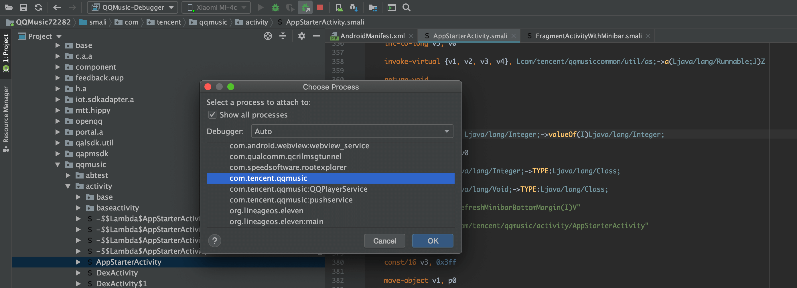

Java语言的逆向(Android APP)
Java语言的逆向比较简单，只说一些关键思路和小技巧。下面以QQ音乐为例，讲述Android APP逆向的基本过程。
静态分析
将APK反编译成比较方便理解的代码（如smali、Java代码等），进行静态分析，了解代码的流程和设计逻辑。
将APK反编译成smali代码
apktool d QQMusic72282.apk
反编译出如下文件：
将APK反编译成Jar包
unzip -d ./QQMusic72282-unzip QQMusic72282.apk # 解压APK
cd ./QQMusic72282-unzip
d2j-dex2jar.sh classes.dex # dex转jar
d2j-dex2jar.sh classes2.dex
d2j-dex2jar.sh classes3.dex
d2j-dex2jar.sh classes4.dex
d2j-dex2jar.sh classes5.dex
得到jar包后直接用JD-GUI打开，即可查看Java代码了。
但多个jar文件用JD-GUI查看很不方便，可以使用以下方法将多个jar合并成一个：
mkdir tmp
cd tmp
unzip -uo ../classes-dex2jar.jar
unzip -uo ../classes2-dex2jar.jar
unzip -uo ../classes3-dex2jar.jar
unzip -uo ../classes4-dex2jar.jar
unzip -uo ../classes5-dex2jar.jar
cd ../
jar -cvf classes-combined.jar -C tmp .
使用JD-GUI打开classes-combine.jar，可查看反编译的Java如下所示：

动态分析
通过断点调试手段，来让APP可以断点单步执行，并通过实时读取变量的值来分析代码的逻辑。
准备工具
- userdebug版的Android手机。
- Android Stuido + smalidea插件
为什么是userdebug版的？因为userdebug版的系统，所有的应用都是debuggable的，这样就可以通过Android Studio开启调试给应用打断点调试。网上也有其他手段，比如：
- 反编译APK在manifest.xml文件增加debuggable属性；
- 使用xposed框架，借助框架强制开启应用的debuggable属性。
但这些方案都有一些问题，方法1在修改了manifest.xml文件后，需要给apk重新打包签名，因此不适用于有签名验证的应用（如喜马拉雅APK重签名后安装，应用会抛签名不合法的异常）；方法2对于低版本Android可能适用，高版本的安卓（实测Android 7.0）已经行不通了。
打开项目
- 打开Android Studio(确认安装好smalidea插件)
- File –> Open –> 选择静态分析中反编译的smali源码目录
QQMusic72282\ - Mark smali及所有smali_classesx为
Sources Root
- Run –> Edit Configurations –> 点击
+添加RemoteConfiguration - 修改名字为QQMusic-Debugger，端口号设置为
8700后点击OK - 电脑连接手机，AS点击菜单
Attach Debugger to Android Process，弹出以下窗口，选择要断点的进程：  - 找到合适的代码行设置断点，程序执行到这一步时进程暂停：
至此，我们就可以在程序运行中查看变量实际的值了，方便我们分析逻辑。上面的由于代码由于做过混淆，所以变量名都是没有规律的A B C。